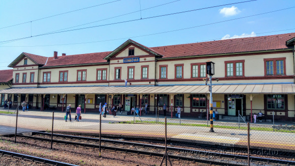
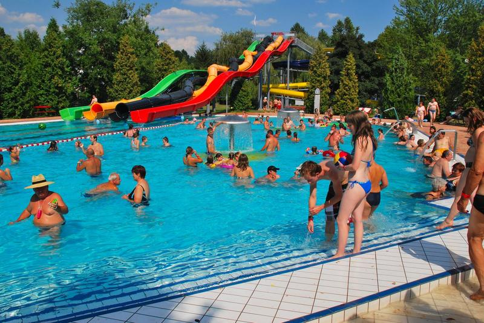
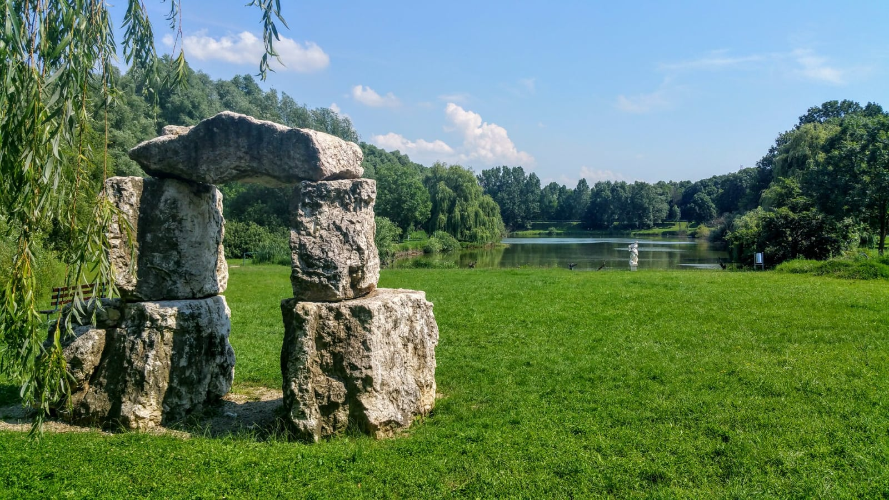
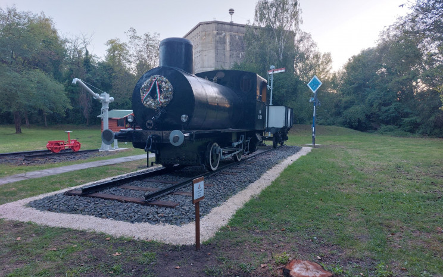

Warum lohnt sich ein Besuch in Dombóvár?
Der Bahnhof Dombóvár ist ein wichtiger Verkehrsknotenpunkt der Region. Von hier aus verbindet die Bahn die Stadt mit der Landschaft Südtransdanubiens und mit mehreren wichtigen Reiserichtungen.

Entdecke Dombóvár mit einem Klick!


Der Bahnhof Dombóvár ist ein wichtiger Verkehrsknotenpunkt der Region. Von hier aus verbindet die Bahn die Stadt mit der Landschaft Südtransdanubiens und mit mehreren wichtigen Reiserichtungen.


Heil- und Erlebnisbecken, Saunabereich und grüne Umgebung machen Gunaras zu einem beliebten Erholungsort bei Dombóvár.
Route planen
Der See liegt in ruhiger Umgebung nahe Dombóvár. Spazierwege, Bänke, Skulpturen und Naturstimmung machen ihn zu einem angenehmen Ausflugsziel.
Route planen
Das Eisenbahnmuseum von Dombóvár, lokal auch als „Múzeum Megálló” bekannt, erinnert an die Eisenbahngeschichte der Stadt.
Route planenBahnhof: Földvár utca 35.
Busbahnhof: Baross tér 1.
Bahnschalter: täglich 05:30-17:20
Internationaler Schalter: täglich 06:35-18:20
Fahrkarten: maschinelle Fahrkartenausgabe und Fahrkartenautomat.
Mo-Fr: 03:10-24:00
Samstag: 03:20-22:00
Sonntag und Feiertag: 03:20-24:00
Das WC folgt denselben Öffnungszeiten.
Liftunterstützung ist am Bahnhof verfügbar.
Akustische Fahrgastinformation.
Kundendienst am Busbahnhof: werktags 08:00-15:00
MÁVDIREKT: +36 (1) 3 49 49 49
Mobil: +36 (20/30/70) 499 4999
Fundsachen im Bahnhofsgebäude.
Parkplätze in Bahnhofsnähe, Fahrradabstellplätze auf dem Bahnhofsgelände.
Quelle: MÁV-Gruppe
Wähle eine Hauptkategorie, dann eine Unterkategorie und anschließend einen konkreten Ort. Die Karte zeigt den ausgewählten Ort, und du kannst eine Fußroute vom Bahnhof anfordern.
Der Plan kann vergrößert und auf dem Handy seitlich verschoben werden.